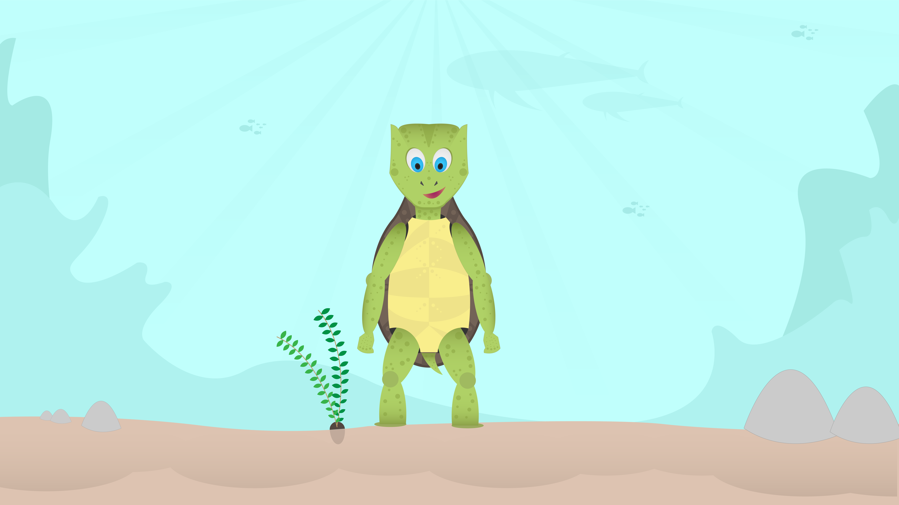
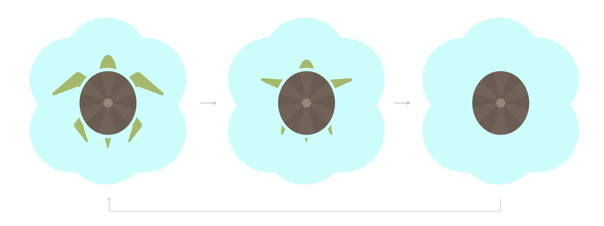
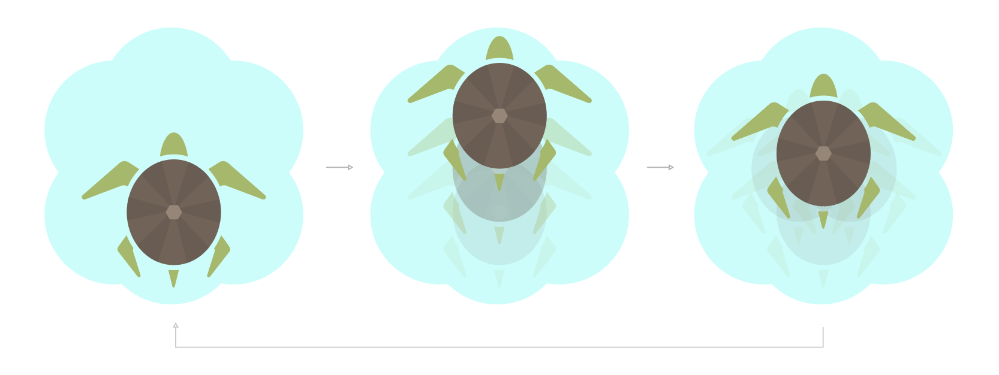
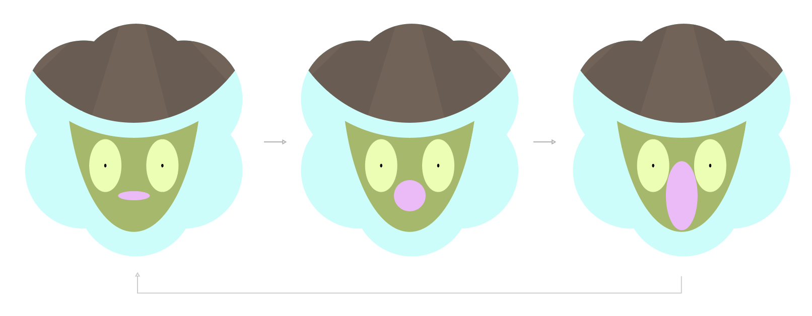

Character Design
Een character ontwerpen en deze animeren in 3 posities. Ik heb gekozen om een schildpad te ontwerpen met als uitgangspunt "Angst". Bij angst heeft de schildpad de posities verdwijnen, schreeuwen en vluchten. Het vak was gefocust op het animeren met geluid.

Week 01 - Character
In de eerste week heb ik aantal schetsen gemaakt van de schildpad. Hieronder staat het proces gevisualiseerd.

Week 02 - Iconen
Iconen ontwerpen die te maken hebben met de posities. Hieronder staat het proces van de iconen. Daarnaast was het ook van belang om de iconen te animeren.
  
Week 03 - Resultaat
Van het eindresultaat heb ik zowel een video als prototype gemaakt om een helder beeld te geven hoe het werkt. Beide hebben hetzelfde uitgangspunt.